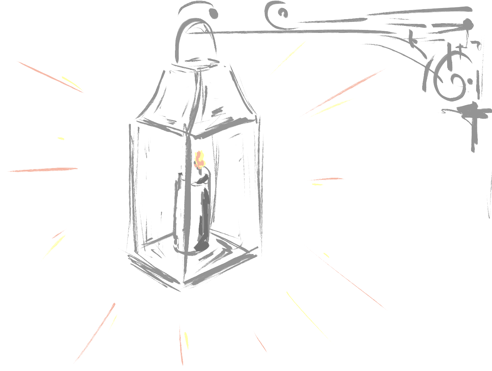
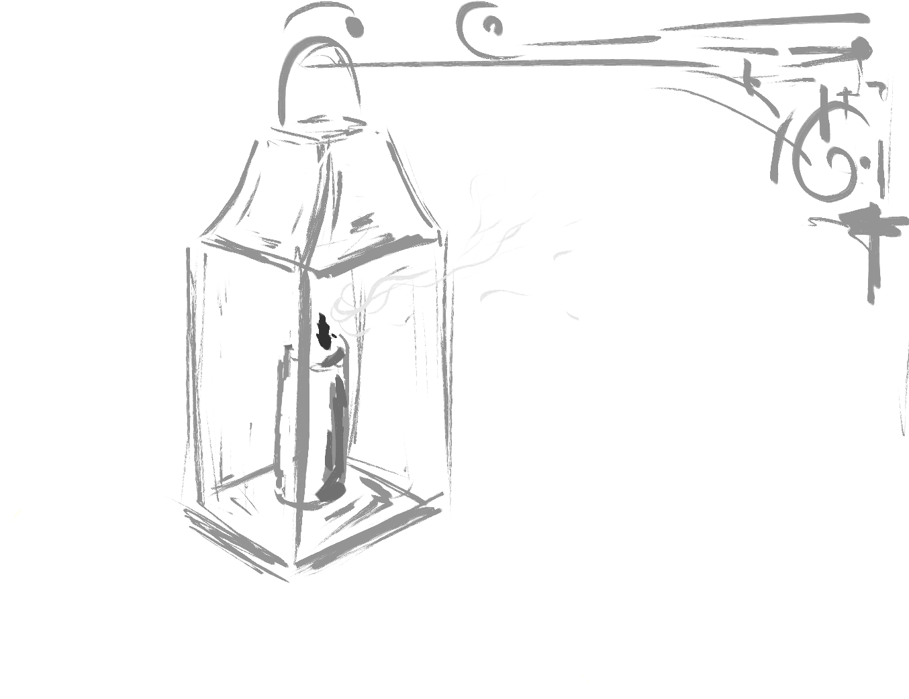
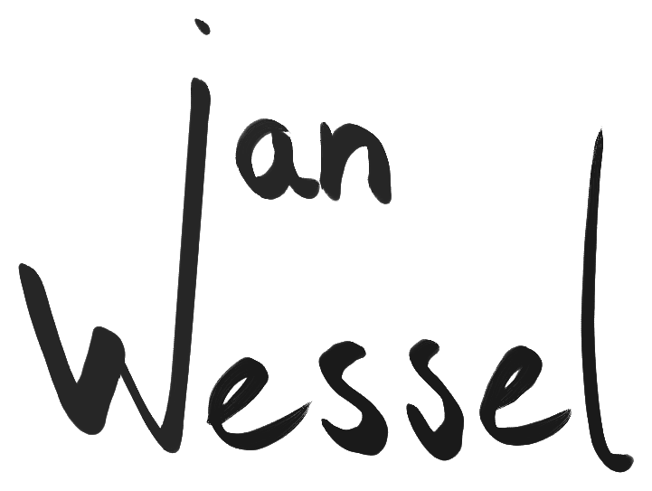
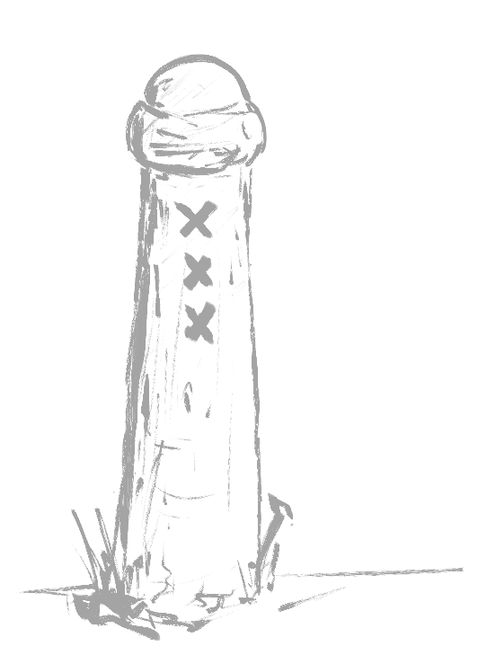
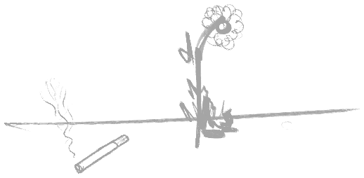
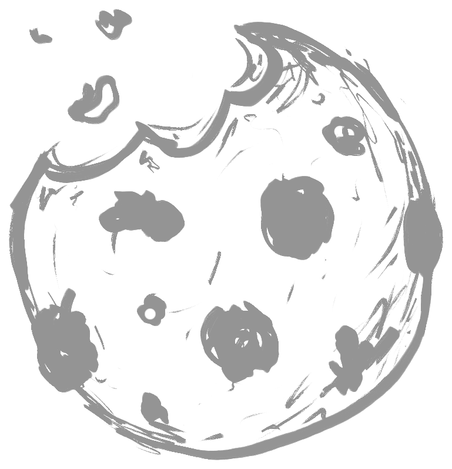
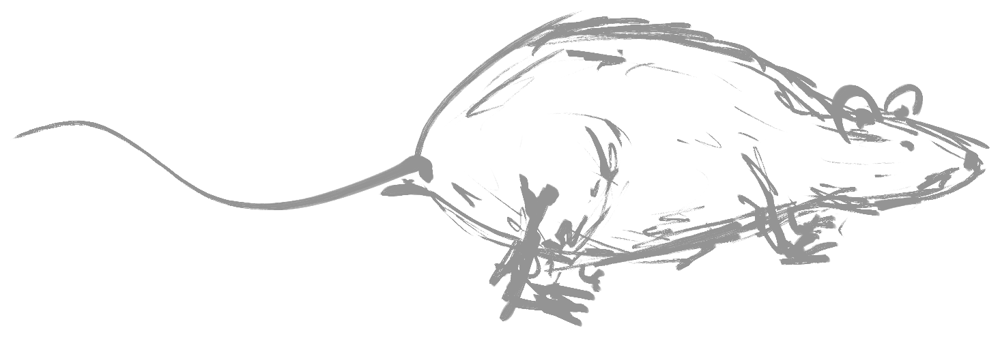

Deze website heb ik ontworpen en getekend voor mijn CMD-opleiding. Hieronder lees je welke diensten van buitenaf worden gebruikt.
Er wordt niets in je browser opgeslagen en er worden geen tracking- of advertentiecookies gebruikt. Dit koekje is dus puur decoratie.
Ik ben Wessel en ik studeer Communicatie Multimedia Design aan de HvA in Amsterdam. Mijn focus ligt op nieuwe dingen bedenken, ontwerpen en maken.
Op deze site laat ik twee verschillende kanten van mij zien: namelijk mijn sportieve kant en mijn creatieve kant. De sportieve kant laat ik zien op de sportpagina, waar ik mijn favoriete sporten en sportmomenten deel. De creatieve kant laat ik zien op de galerijpagina, waar ik mijn schilderijen en tekeningen deel.